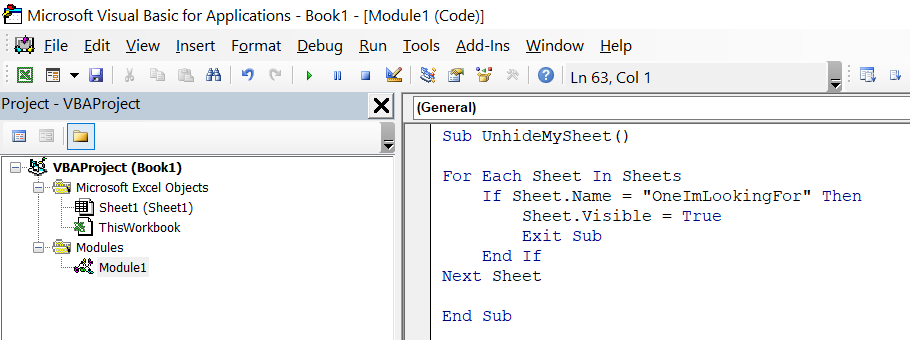

Common to programming languages, conditional statements are commands which dictate whether following areas of code will be executed. Like variables and loops, they make code more dynamic, and better able to perform complex tasks without interruption.
Like the worksheet environment, VBA has an If function, which evaluates whether a specific criteria is true, and lets you dictate specific actions to take if so. It can also be told to execute something else if the criteria evaluates to false. The syntax of this function requires the keywords If, Then, and End If, such as:
If Specified Action Then
Action to Take If True
End If
When supplying an action to be executed if the criteria evaluates to be false, the Else statement is required, such as:
If Specified Action Then
Action to Take If True
Else
Action to Take If False
End If
Unless specifying an action to take if false, you can condense the statement to one line, adding a colon after Then, and omitting the End If, such as:
If Specified Criteria Then: Action to take if true
It is a best practice to indent the actions contained by a condition, or loop. In VBA it is not mandatory, but it helps to make code more readable. If there are multiple levels of containment, there should be multiple levels of indentation, such as:
If Range("a1").Value = "Hello" Then
Msgbox "Cell contains Hello"
Else
If Range("a1").Value = "Goodbye" Then
Msgbox "Cell Says Goodbye"
Else
Msgbox "Cell contains something else"
End If
End If
Dealing with multiple levels of indentation can become cumbersome, especially if there are numerous levels of conditions which branch out from the first one. One alternative to enhance organization and readability is the ElseIf statement, which essentially concatenates the Else of an If statement with the If of the next statement; but only requires a single End If, such as:
If Range("a1").Value = "Hello" Then
Msgbox "Cell contains Hello"
ElseIf Range("a1").Value = "Goodbye" Then
Msgbox "Cell contains Goodbye"
Else
Msgbox "Cell contains something else"
End If
The Case statement makes it simple to deal with numerous criteria and potential decisions. For each criteria in a top-down list, if the condition is true, the following action is taken, and the rest of the Case statement ignored. The syntax is illustrated in the below example:
MyNumber = 2
Select Case MyNumber
Case Is = 0
MyText = "zero"
Case Is = 1
MyText = "one"
Case Is = 2
MyText = "two"
End Select
Msgbox MyNumber
Like the If statement, you can condense simple evaluations to one line by using a colon, such as:
Case Is = 2: MyText = "two"
A common integration with conditional statements is the Goto statement, which forces code execution to skip to a particular line of the same macro, identified below by a text label and a colon.
Over-use of Goto statements is detrimental toward organization, but it helps to deal with unwanted or unexpected scenarios.
Say that, for a list of books, you are populating the year published in an adjacent column, but some rows already have a value populated, which you do not want to overwrite. A Goto statement can be used to skip to the end of the loop for those rows, such as:
For i = 5 to 50
If Columns(2).Rows(i).Value <> "" Then
Goto AlreadyPopulated
Else
Columns(2).rows(i).Formula = "=VLOOKUP(B" & i & ",datasheet!A:B,2,false)"
End If
AlreadyPopulated:
Next i
Exercise: The above makes for a simple illustration of the Goto statement, but was not the most efficient way to perform this task. How would you make it more efficient?
It is also quite common to want to leave a sub-procedure early; for example, if an error is encountered, or if the desired objective has already been achieved.
The Exit Sub statement makes code execution skip to the End Sub line. If the macro containing Exit Sub was called upon by an encompassing procedure, the code execution will return to where it left off in the encompassing procedure.
The below macro ensures a particular sheet is visible, but exits the macro once it is found, rather than continuning to loop through all sheets.
